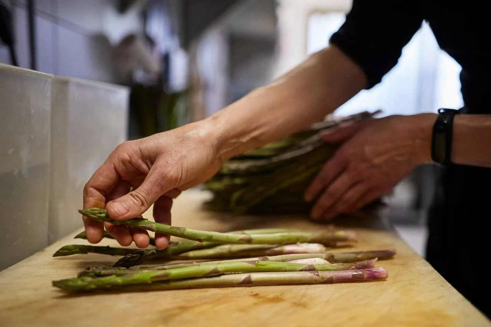

Salmón a la Parrilla con Espárragos y Batata Asada

Tabla de contenido
Ingredientes:
- Para el salmón a la parrilla:
- Filetes de salmón: 4 filetes.
- Aceite de oliva: 2-3 cucharadas.
- Jugo de limón: 2 cucharadas.
- Ajo: 2 dientes, picados.
- Perejil fresco: 2-3 cucharadas, picado finamente.
- Sal y pimienta al gusto.
- Para los espárragos:
- Espárragos: 1 manojo, aproximadamente 20 espárragos.
- Aceite de oliva: 2 cucharadas.
- Sal y pimienta al gusto.
- Para la batata asada:
- Batatas (boniatos): 2 grandes o 4 pequeñas.
- Aceite de oliva: 2 cucharadas.
- Sal y pimienta al gusto.
- Papel de aluminio (si se asan en la parrilla) o una bandeja de horno (si se asan en el horno).
Paso a Paso:
-
Preparación de la batata asada
- Pre calienta tu parrilla o horno a 200°C (390°F).
- Lava y pela las batatas (boniatos) y córtalas en rodajas o trozos del tamaño que prefieras.
- Coloca las batatas en una bandeja para horno o en hojas de papel de aluminio si vas a asarlas en la parrilla. Rocía con aceite de oliva, sazona con sal y pimienta al gusto.
- Cocina en el horno o en la parrilla durante aproximadamente 25-30 minutos o hasta que estén tiernas y doradas.

-
Preparación de los espárragos
- Lava los espárragos y corta los extremos leñosos. Puedes doblarlos y se romperán naturalmente donde deben.
- En un tazón, mezcla los espárragos con aceite de oliva, sal y pimienta.
- Asa los espárragos en la parrilla o en el horno durante 10-15 minutos hasta que estén tiernos y ligeramente dorados. Puedes darles la vuelta ocasionalmente.

-
Preparación del salmón a la parrilla
- En un tazón, mezcla el aceite de oliva, el jugo de limón, el ajo picado, el perejil fresco, la sal y la pimienta. Esta mezcla será la marinada para el salmón.
- Coloca los filetes de salmón en un plato y vierte la marinada sobre ellos, asegurándote de que estén bien cubiertos. Deja marinar durante unos 15 minutos.
- Precalienta la parrilla a fuego medio-alto y engrásala ligeramente.
- Coloca los filetes de salmón en la parrilla y cocínalos durante 4-5 minutos por cada lado o hasta que estén cocidos a tu gusto y tengan marcas de parrilla.